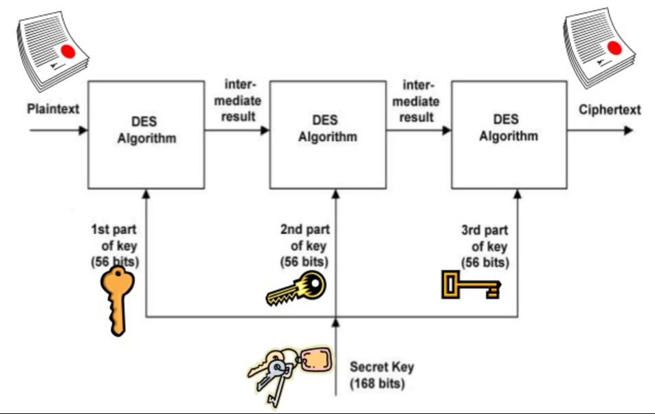

“Sweet 32” take advantage of is ranked as a medium chance by using the Common Vulnerability Scoring System(CVSS), so in this example, the presence of TDEA algorithm could be suggested “failure”
In addition to that, the idea of “robust cryptography” is based totally on the attractiveness of NIST authoritative bodies. Once it's miles disallowed with the aid of the authoritative bodies, it will not be considered as sturdy cryptography.


Comparison Of TDEA And Rijndael Advance Encryption Standard (AES)
Introduction
This article covers the comparison between TDEA algorithm and Rijndael also known as Advance Encryption Standard(AES)
TDEA Algorithm
- Description of TDEA algorithm
- Considerations for the use of TDEA algorithm
- Security of TDEA algorithm
- Recommendations for Reducing the risk
Rijndael Algorithm
- Origin of Rijndael Algorithm
- Why AES replaced TDEA algorithm
- High-level Description Rijndael Algorithm
- Decryption Process
- Stability under attack
TDEA Algorithm
Description of TDEA Algorithm
Triple Data Encryption Algorithm became designed to cope with the failings that were found in DES set of rules without
creating a completely new cryptosystem. Data Encryption Standard (DES) set of rules makes use of a 56-bit key and
it is not efficient enough to encrypt touchy information. In order to overcome this flaw, Triple DEA Algorithm was
introduced that extends the DES set of rules with the aid of applying the set of rules three times in succession.
The blended key length is consequently 56*3 =168 bit key length. Despite creating the algorithm secured by way of
the usage of three instances greater secured key but this also slows down the algorithm as it takes 3 instances more
time compared to DES set of rules.
Considerations for use of TDEA Algorithm
This set of rules is used by older running systems and older protocols. Up to this point systems are now the usage
of AES (Advanced Encryption Standard) also named Rijndael Algorithm as it's miles lots efficient as compared
to TDEA algorithm in phrases of block size, key length, a wide variety of rounds and key scheduling.
“Sweet 32” take advantage of is ranked as a medium chance by using the Common Vulnerability Scoring System(CVSS), so in this example, the presence of TDEA algorithm could be suggested “failure”
In addition to that, the idea of “robust cryptography” is based totally on the attractiveness of NIST authoritative bodies. Once it's miles disallowed with the aid of the authoritative bodies, it will not be considered as sturdy cryptography.
Security of TDEA Algorithm
As TDEA algorithm having 3 unbiased keys carries 168 bits key length but because of an attack named “meet-in-the-middle-attack”,
the safety that it ensures is only 112 bits. The meet-in-the-middle-attack(MITM) is a popular cryptographic attack
in opposition to encryption techniques that depends on performing multiple encryption operations in a sequence. That
is the primary purpose why TDEA set of rules can be compromised and brute-forced through an attacker with 2
56 space and 2
112 operations.
The short block size of 64 bytes makes the TDEA algorithm makes it vulnerable if it makes use of the equal keys to
encrypt massive amounts of data.
The number of blocks with one key bundle has an effect on the safety of TDEA set of rules. To observe cryptographic
protection one key bundle shall now not be used.
Recommendations for reducing the risk
The recommendation for reducing the chance is to disallow the usage of TDEA algorithm as it's miles now not an
up to date cipher suite that will be backdoor for exploitation. So it's far suggested the use of AES set of
rules having a block size of at least 128 bits and key duration of 128 bits that makes it a secured and up to date
cipher suite. I Will talk in the latter part of this paper. Some measures that taken will reduce the threat of the
current TDEA set of rules: 1. Using a more potent cipher suite, encrypt records at software layer. 2. Regularly converting
the TDEA key
Rijndael Algorithm
Origin of Rijndael Algorithm
The algorithm changed into created by way of the cryptologists, Joan Daemen and Vincent Rijmen. The word Rijndael
was derived from their surnames. Rijndael has its origins in Square, an encryption algorithm previously designed
by the collaboration of both cryptologists, but became intended to enhance upon that in advance try in accordance
with three principles that guided the process,
- Defense to all recognized attacks
- Efficiency and speed of the supplied code on a number of computing systems
- Design’s Simplicity
Introduction
Rijndael Algorithm also called Advance Encryption Standard(AES). Rijndael is a family of Ciphers having distinctive
keys and block sizes. This set of rules has become chosen to update the DES Algorithm through the National Institute
of Standards and Technology(NIST).It is a symmetric key algorithm that means similar key might be used for each both
encryption as well as decryption processes. It is based on a layout principle. Unlike its predecessor DES,it doesn’t
use Feistel Network.
2.1
Why AES replaced the TDEA algorithm
One of the major requirements by NIST( National Institute of Standards and Technology(NIST) for the replacement of
the TDEA algorithm was that It had to be efficient enough to be implemented in both implementations that are hardware
as well as software.
AES was chosen from the competition by researchers from all around the world.And finally, in October 2000, NIST announced
Rijndael as the Advanced Encryption Standard(AES)
2.2
Description of the Rijndael Algorithm
It’s a block cipher that works iteratively,
- Block size available in three different bit key versions that are 128-bit size, 192-bit size or 256-bit size
- Key Length :128bit, 192 bit or 256 bit
- Count of Rounds: 10 rounds include for 128 bits, 12 rounds required for 192 bits or 14 rounds for 256 bits
- Key Scheduling comprises of 44 subkeys, 52 subkeys or 60 subkeys having length= 32 bit
It allows a 128-bit length
It is reversible as most of the encryption algorithms.
For the encryption process, each round consists of four steps excluding the very last one
- Very first step is Sub Bytes consists of byte by byte substitution that uses an S-Box
- The second step of this encryption process is Shift Rows: It consists of a permutation process that shifts the three last rows cyclically
- The third step is Multiple Columns
- The fourth step is Add Round Key that includes bit by bit XOR operation with an expanded key
For the decryption process, every round consists of following given four steps:
- The first step of Decryption is Inverse Shift Rows
- The second step is Inverse Shift Bytes
- The third step is Add Round Key
- Last one is Inverse Mix Columns
High-level Description of the Algorithm
The Sub Bytes Step
Sub Bytes is the first system of transformation that is used in the encryption side.We need to symbolize the byte
as a hexadecimal digit, to replace the byte. The main cause of this substitution manner is to lessen the association
between input and output bits. It ensures that substitution can not be described in comparing a mathematical function.
It isn't the same as DES S-Box in ways like it has only one S-Box and clean to analyze
Shift Rows
This technique of transformation consists of 4 steps which can be described below:
- The first row of the array kept unchanged
- Circularly shift the second one row by one byte to the left.
- Circularly shift the third row via bytes to the left
- Circularly shift the final row through 3 bytes to the left
Mix Columns
This procedure of transformation replaces each byte of the column by a characteristic of bytes in the same column.
In this step, 4 bytes of every column have combined the usage of invertible transformation. It takes four bytes as
entering and output for bytes. This transformation includes a set matrix. This transformation includes a fixed matrix
The AddRoundKey Step
In this manner subkey is brought to the state. Every round has its own round key that is derived from the 128-bit
encryption key. Bitwise XOR is used in this technique, wherein the subkey is introduced by way of that combines every
byte of the state with a byte of the corresponding subkey.
Decryption Process
Till now we've mentioned the encryption system. The decryption procedure is the inverse of encryption procedure
which inverse the round transformations to compute the plain textual content out of the cipher textual content in
the opposite text. Round keys should be decided on in opposite order to retrieve the obvious text
Stability under Attack
There were various candidates for the NIST competition and all were taken into consideration for the AES, Rijndael
was chosen as the winner of NIST competition on the basis of its low memory requirements and is more efficient as
compared to other candidates. Crypto-analysts usually agree on the result that Rijndael will prove efficient and
stable for all its applications that will use in real-time and the process can be more secured and strengthened by
adding extra rounds to transformation. A confined wide range of tests at the set of regulations has succeeded, but
these had been performed in internal laboratory environments, and in large part represent theoretical conditions
now not going to arise in an enterprise context. In addition to its protection that is inherited and stability of
crypto-system, Rijndael is capable enough for its ability to run efficiently and more securely on a number of computing
environments, including large arrays, computing tool systems, cellular devices, and other types of smart cards.
Conclusion
In this paper, the study of the two popular modern encryption algorithms has been reviewed: TDEA and Rijndael (AES).
Results show that the Rijndael algorithm takes less time to encrypt and decrypt the file as compared to the TDEA
algorithm. Also, when the encryption algorithms are applied parallel then it was found out that TDEA is comparatively
slow and is less secured as compared to RijSndael in terms of keys size and efficiency.